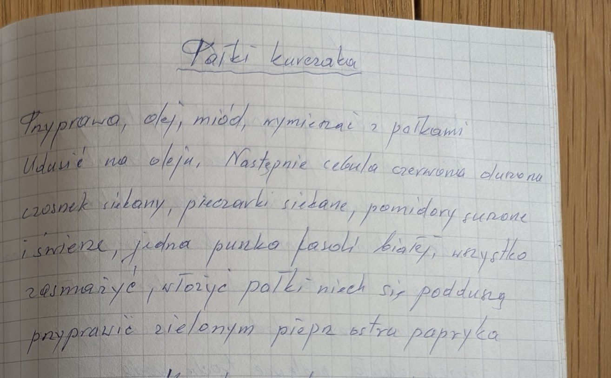

Pałki kurczaka


Składniki
- pałki z kurczaka
- przyprawa do kurczaka
- olej
- miód
- czerwona cebula
- czosnek
- pieczarki
- pomidory suszone i świeże
- 1 puszka białej fasoli
- zielony pieprz
- ostra papryka
Przygotowanie
- Przyprawę, olej i miód wymieszać z pałkami.
- Pałki udusić na oleju.
- Udusić czerwoną cebulę, dodać siekany czosnek, siekane pieczarki, pomidory suszone i świeże oraz puszkę białej fasoli – wszystko zasmażyć.
- Włożyć pałki, niech się poddusą.
- Przyprawić zielonym pieprzem i ostrą papryką.
Oryginalny zapis
Pałki kurczaka Przyprawa, olej, miód, wymieszać z pałkami Udusić na oleju. Następnie cebula czerwona duszona czosnek siekany, pieczarki siekane, pomidory suszone i świeże, jedna puszka fasoli białej, wszystko zasmażyć, włożyć pałki niech się poddusą przyprawić zielonym pieprz ostra papryka